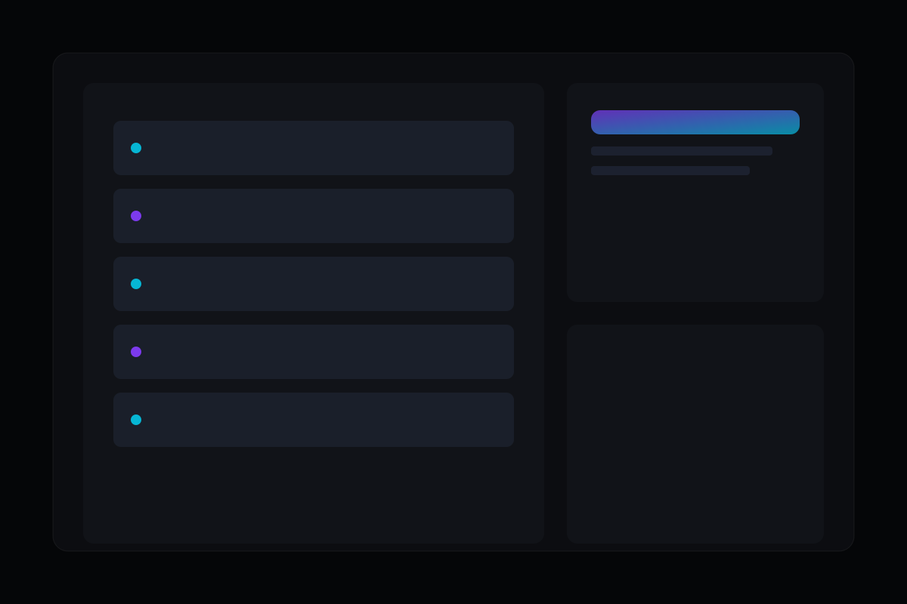

Quando aplicar
Quando compliance, privacidade e custo recorrente exigem controle direto do ambiente de tecnologia.

Servidores Self-Hosted
Implementamos ambientes self-hosted com segurança, monitoramento e rotinas de continuidade alinhadas ao seu risco operacional.
Quando compliance, privacidade e custo recorrente exigem controle direto do ambiente de tecnologia.
Ambiente seguro, estável e transparente para escalar aplicações sem dependência de infraestrutura opaca.
Montamos um ambiente self-hosted sob medida para sua realidade de operação e governança.